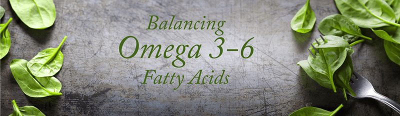

#5 – Omega 3/6 for Vegans
Omega-3 essential fatty acids (EFA’s) are necessary and healthy nutrients. They help regulate blood clotting, reduce inflammation, build cell membranes, and support overall cellular health. The body can’t synthesize these nutrients, so they have to come from our diet. Essential omega-3 nutrients can be found in animal products such as fish oil, grass-fed meats, eggs, and dairy products BUT you can also source them through plant-based foods.

The other omega that we need to be aware of is omega-6, which also comes from food. Too much consumption of omega-6 and a high imbalance in the ratio to omega-3 can promote a host of diseases such as cardiovascular disease, cancer, and inflammatory and autoimmune diseases. (1) I highly recommend making yourself aware of omega-3 and omega-6 so you can catch and correct any imbalance that you may be creating in your daily diet.
What We Should Aim For?
Our goal should be to lower our omega-6 to omega-3 essential fatty acids, a ratio to about 2:1 or 1:1 if possible.
To reduce your omega-6 intake, cut out processed foods and oils derived from corn, canola, soy, sunflower, and safflower. Increase your omega-3 intake with nuts, seeds, avocados, dark leafy greens, and extra virgin olive oil. I have put together a small list of foods that are rich in omegas but do note that foods can have a mix of both, it’s finding the right ratio. There is a LOT of scientific information out there, so I recommend that you do your research. It is always best to consult with your wellness practitioner to see if you need further supplementation. For those of you who are vegan, they do make vegan omega supplements.
 Best Choices for Omega-3 Essential Fatty Acids
Best Choices for Omega-3 Essential Fatty Acids
Nuts & Seeds
- Brazil Nuts
- Walnuts
- Flax Seeds
- Chia Seeds
- Pumpkin Seeds
- Hemp Seeds
- Sesame Seeds
Healthy Fats:
- Extra Virgin Olive Oil
- Hemp Oil
- Wheat Germ Oil
- Vega EFA Oil
- Udo’s 3-6-3 Oil
Whole Foods:
- Avocado
- Basil
- Berries
- Black Beans
- Broccoli
- Brussel Sprouts
- Cauliflower
- Darky Leafy Greens (kale, spinach, mustard, and collards)
- Edamame
- Kidney Beans
- Mung Beans
- Navy Beans
- Oatmeal
- Winter Squash
- Spirulina
Best Choices for Omega-6 Essential Fatty Acids
Nuts & Seeds
- Flax Seeds, ground
- Hemp Seeds
- Pine Nuts
- Pistachio Nuts
- Pumpkin Seeds
- Sunflower Seeds
Healthy Fats
- Flaxseed Oil
- Hempseed Oil
- Grapeseed Oil
Disclaimer
This website is not intended to provide medical advice. All content, including text, graphics, images, and information available on this site is for general informational, entertainment, and educational purposes only. The content is not intended to be a substitute for professional diagnosis or treatment. The author of this site is not responsible for any adverse effects that may occur from the application of the information on this site. You are encouraged to make your own healthcare decisions, based on your research and in partnership with a qualified healthcare professional.
© AmieSue.com